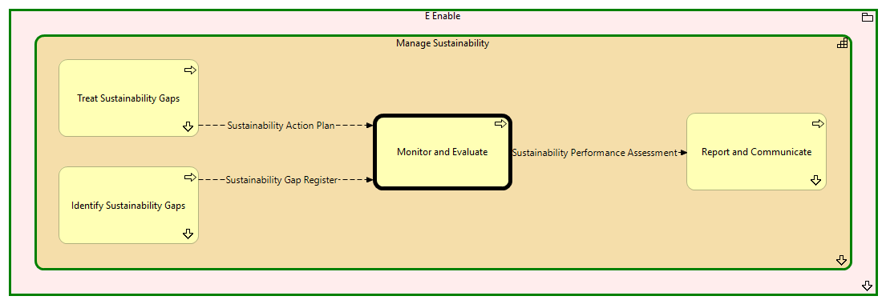

Monitor and Evaluate - Context
(
)

generated_by
build_archi_xml.py::gen_proc_node_context_view
generator_path
pedro/capabilities/build_archi_xml_assign/build_archi_xml_assign.py
run_at
2026-10-10T17:58:21
view_type
process_context
E Enable
Manage Sustainability
Identify Sustainability Gaps
Identify Sustainability Gaps - Context
Monitor and Evaluate
Report and Communicate
Report and Communicate - Context
Treat Sustainability Gaps
Treat Sustainability Gaps - Context
Manage Sustainability - Processes
E Enable - Processes
Sustainability Gap Register
Identify Sustainability Gaps
Monitor and Evaluate
Sustainability Performance Assessment
Monitor and Evaluate
Report and Communicate
Sustainability Action Plan
Treat Sustainability Gaps
Monitor and Evaluate